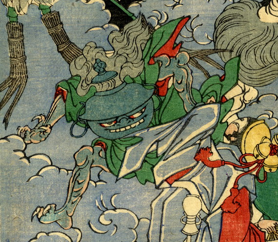

頭部が茶釜の化物。緑の衣を着て、走っているようにみえる。手足には鋭い爪が生えている。
著作者：一魁斎芳年／出典：親書誌：U426_nichibunken_0224：百器夜行；ヒャッキヤギョウ／日付：2010／資源識別子：U426_nichibunken_0224_0005_0000
Copyright (c)2010- International Research Center for Japanese Studies, Kyoto, Japan. All rights reserved.